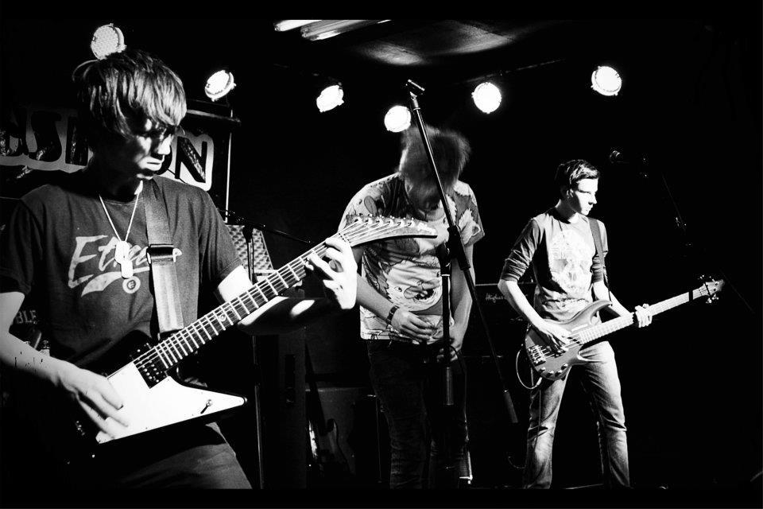

Welcome to my journey
Test 3 I'm a third year UX Design student from The Hague. A background in music,
gaming and graphic design come together to form a broad skill set that is enhanced by a
lifelong passion and creativity.
Combining my background and skills acquired during my studies,
I am able to bring a wide variety of concepts to life, ranging from front-end
development to user interactions to sound design.
Graphic designer
Ux designer
Sound designer
Early life
Growing up with music led to picking up multiple instruments, performing in bands and writing songs. Guitar led to electronic music, which led to sound design. Writing music served as the first introduction to the creative process. From idea to concept to creating an album the satisfaction of having my ideas come to life has served as my fundamental inspiration to create.
Being a huge fan of video games inspired me to work on graphic art and editing images. Starting out by creating content for friends and fellow gamers resulted in seeking out further education to expand my skill set. The more I learn, the further I can push my boundaries and incorporate my new skills into my existing passions. Trying things that are out of my comfort zone is what I crave.
The present

Over the years my music has evolved into creating soundscapes and complex sound design, and from collaborating with others to producing music solo. Graphic design developed into front-end development, acquiring skills with each passing year of my studies. This felt like a logical evolution of my passions and skills. Looking into the future, I aim to grow further into my role as game developer and sound designer.
My goal is to combine my hobbies, my experience, my studies and my passions into my work. Gaming, graphic design, electronic music. For example, game development in combination with sound design. Marketing campaigns and graphic design. I have found that my particular skill set translates into being able to offer a broad range of solutions to your problems. Problem solving, fine-tuning and expanding concepts is where I thrive. I aim to stay out of the box.